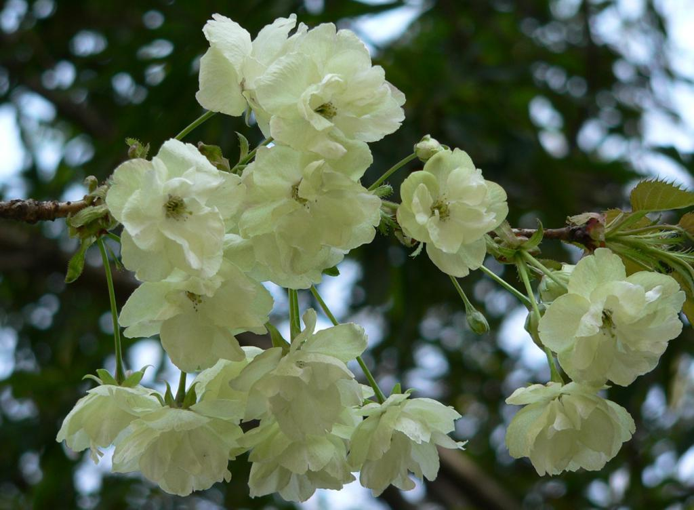

The four seasons
Green Cherry Blossoms
Have you seen such cherry blossoms?
The color of cherry blossoms is slightly pink, I have believed so.
It doesn't become even a topic because it is no uncommon in local.
When I saw these cherry blossoms for the first time, I was surprised at their color.

In the same place, natural cherry trees are also in bloom.
Since the green cherry flowers later,
the flowering period of natural cherry tree has passed.
This is an image for the comparison for the present.


over exposure a little...
green cherry blossoms, again
